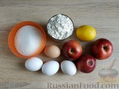

Бисквитное тесто для яблочной шарлотки по этому рецепту готовится просто, без разделения яиц на желтки и белки. Шарлотка получается пышной и воздушной, а если красиво выложить яблоки, а затем перевернуть готовый пирог, - и очень нарядной.

Подготовьте необходимые ингредиенты. Яблоки желательно выбирать твёрдых сортов, кисло-сладкие. Я использовала красные яблоки и не очищала их, чтобы пирог выглядел красивее.
Яблоки нарежьте ломтиками.
Полейте нарезанные яблоки лимонным соком и перемешайте.
В большую миску разбейте яйца. Включите духовку для разогрева до 180 градусов.
К яйцам всыпьте сахар. (Рекомендуют не сразу всыпать весь сахар, а добавлять частями при взбивании.) В рецептах бисквитного теста количество сахара в столовых ложках часто соответствует количеству яиц. То есть для бисквита из 4-х яиц достаточно 4-5 ложек (и столько же ложек муки).Но я добавила 1 стакан сахара (200 г) - бисквит получился сладким, но очень воздушным и пышным. Вы можете использовать меньше сахара (100-150 г), но учитывайте, что сахар влияет не только на сладость теста, но и на его структуру и плотность.
Миксером, на высокой скорости, взбивайте яйца с сахаром в течение 8-10 минут минимум. Масса должна стать светлой, пышной и увеличиться в несколько раз. (Замечают, что на качество и скорость взбивания яиц может влиять форма венчиков миксера, и лучше всего - парные основные насадки).
В яичную смесь просейте частями муку через сито.
Лопаткой аккуратно вмешивайте муку снизу вверх, поднимающими движениями, чтобы тесто осталось воздушным, не осело.
Дно разъёмной формы для выпечки (диаметром 23-24 см) покройте пергаментом. Стенки формы смазывать маслом не нужно. Если беспокоитесь, что пирог будет трудно вынуть из формы, смажьте ее маслом, но присыпьте при этом мукой, панировочными сухарями или манкой.
На дно формы выложите ломтики яблок.
Сверху яблоки залейте тестом. (Можно выложить яблоки в два слоя, чередуя их с тестом.)
Выпекайте шарлотку в духовке, предварительно разогретой до 180 градусов, примерно 40 минут. Важно духовку при выпечке бисквитного теста не открывать, по крайней мере первые 20 минут.
Готовую шарлотку остудите в форме. Затем выложите бисквитный пирог с яблоками на блюдо, перевернув вверх дном, чтобы яблочные ломтики оказались сверху.
Когда яблочный пирог полностью остынет, можно посыпать его сахарной пудрой. Приятного аппетита!
Желтки положить в эмалированную кастрюлю, добавить муку и пудру. Размешать желтки с сахаром и мукой. Добавить молоко и перемешать. Варить крем на медленном огне 5-7 минут постоянно помешивая. Остывший крем нанесите на шарлотку и дайте пропитаться минут 15.
Подробное описание рецепта русская еда